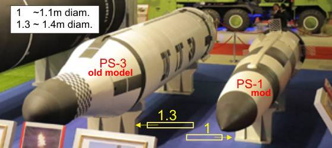

|
North Korea's modified
"Pukguksong-1" SLBM (PS-1mod)
Norbert Brügge, Germany
|
2022, October -- A further test launch
|
2022, April 25 -- On the parade
|
2021, October - 19 -- North Korea has confirmed
the reported launch of the SLBM from a submarine with photos. This is without
a doubt the type of PS-1 mod was presented at the exhibition. The significantly
longer WH, the roll fins and the start mode using a gas dynamic piston are
new. The used Sinpo-class submarine is unchanged, the launch tube possibly.
Note: The PS-1mod is not identical or
derived from the PS GLBM-2.
Here is an overview.
2021, October 12 -- In a presentation
of the North Korean missile arsenal, a Pukguksong-1 SLBM with modified WH
and new cable duct is shown. The old model of a PS-3 beside to it illustrates
the different dimensions once again.
|

|
|
|
On closer inspection, the gas dynamic
piston with the grid fins and the covers for the roll fins can be guessed
at the PS-1 mod.
|
|